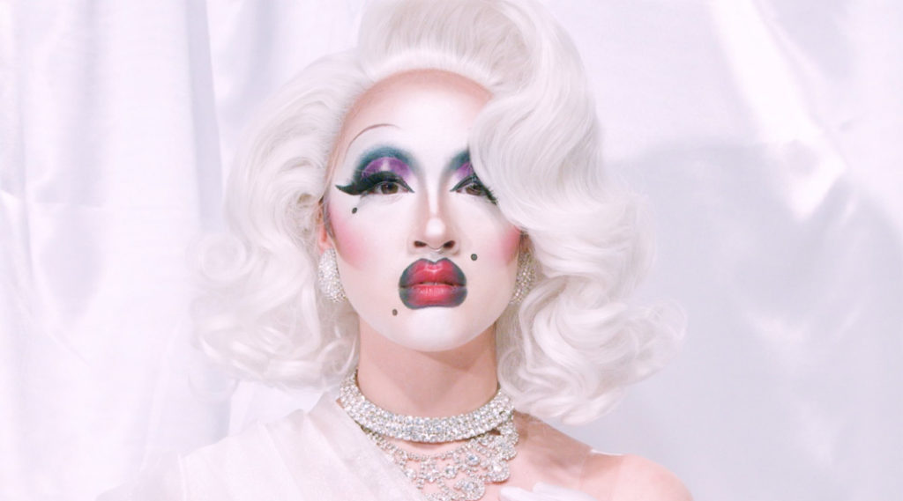

With rapidly changing online social and political landscape, cyberfeminism in the 21st century has been moving to explore new topics within modern technology and the digital sphere, from sexual harassment via social media to privacy and the protection of images online to reproductive justice. Many have dubbed this updated version of the movement post-cyberfeminism or cyberfeminism 2.0.
In 2004, 90's cyberfeminist Faith Wilding founded subRosa, an art collective that critiqued the racial and gender biases in assisted fertility and genetic engineering to address what she saw as the next frontier for gender discrimination, biotechnology.
The Xenofeminists, a collective founded in 2014 advocate for “gender-hacking” across the web. They believe gender is not a natural order but something that can be coded, and the only way to ensure gender self-identification and self-expression is to make sex hormones available to all.
In 2017, the Post Cyberfeminist International was hosted in London. A prominant participant was artist Victoria Sin: "I think it’s very important as women and gender-nonconforming folk to create these discourses with artists who came before you...The history of feminist art and Cyberfeminism is often not taught in curriculums and it’s often up to artists on the margins to make links in our own discourses so that we are not complicit in the erasure of histories of resistance.”
Today, the web continues to bring cyberfeminists together to further explore issues of gender, sexuality, and race. Many mediums such as photography and videography are being explored in different ways, with the body and technology continuing to be a common focus of artists' work.